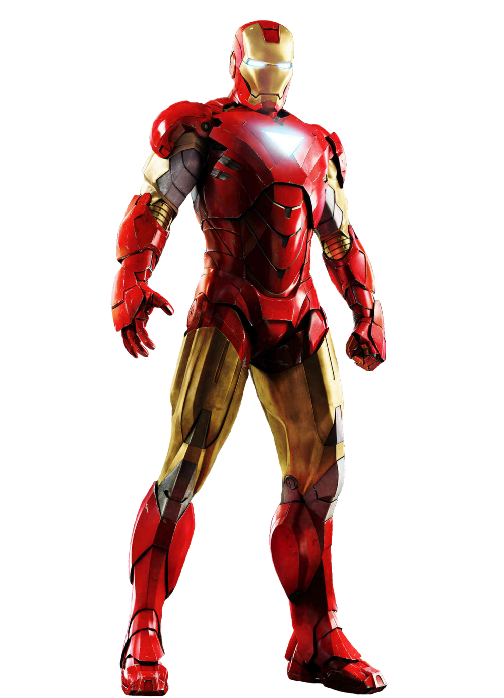

Iron Man
Character's Information
- Name: Tony Stark
- Age: 52 [Deceased 2019]
- Hobbies: Building advanced technology, flying, saving the world
- Place of Origin: Long Island, New York
In the Marvel Cinematic Universe, Iron Man, also known as Tony Stark, is a wealthy, brilliant engineer and inventor who creates a powerful suit of armor to protect the world. He becomes a founding member of the superhero team, the Avengers, and uses his intellect and resources to battle various threats to humanity.